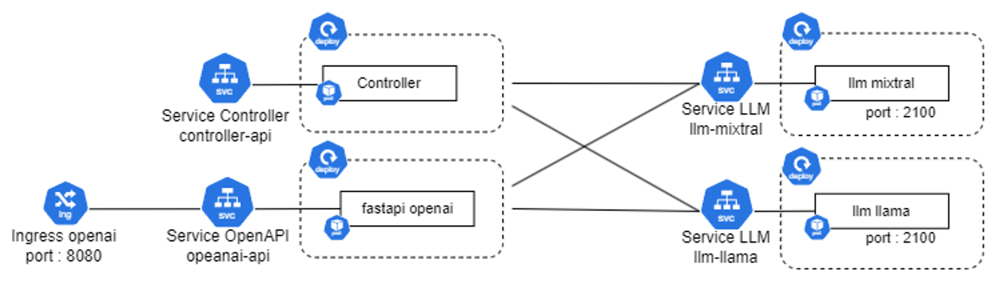

4. Service LLM à grande échelle
Les LLM sont des modèles de langage puissants qui nécessitent des ressources informatiques importantes pour fonctionner efficacement. Pour mettre en production une application utilisant des LLM, il est essentiel de choisir le bon matériel et les bons outils pour garantir la disponibilité des applications et des performances optimales.
Pour certains modèles de langage, les processeurs habituels appelés CPU (Central Processing Unit) peuvent suffire. Mais pour la plupart des modèles plus importants, pour que les calculs se fassent dans des temps raisonnables, il est nécessaire de se doter d’unités de traitement graphique (GPU). Nous allons donc nous intéresser ici aux différents critères à étudier pour choisir correctement des GPUs, aux outils qui permettent de suivre leurs performances et enfin le lien avec les essentiels de déploiements en termes de management de ressources (avec l’exemple du lien à Kubernetes).
GPU pour les LLM
La sélection des GPU (Graphics Processing Units) pour une installation dans une structure dépend de multiples facteurs. En voici quelques uns :
- Puissance de calcul : La puissance de traitement des GPU est mesurée en flops (floating-point operations per second). Un GPU plus puissant permettra d’exécuter des tâches plus rapidement et de gérer des charges de travail plus élevées.
- Mémoire vive : La mémoire vive (VRAM) des GPU est essentielle pour les applications nécessitant une grande quantité de mémoire, comme les simulations scientifiques ou les applications de traitement d’image. Assurez-vous de choisir des GPU avec suffisamment de mémoire vive pour répondre aux besoins de vos applications.
- Énergie et consommation : Les GPU consomment de l’énergie et génèrent de la chaleur. Choisissez des GPU économes en énergie et dotés de systèmes de refroidissement efficaces pour réduire les coûts énergétiques et améliorer la durée de vie des composants.
- Coût et rentabilité : Évaluez le coût total de possession (TCO) des GPU, en tenant compte des coûts d’achat, de maintenance et d’énergie. Choisissez des GPU qui offrent une bonne rentabilité pour votre administration.
- Compatibilité avec les systèmes d’exploitation : Vérifiez que les GPU sont compatibles avec les systèmes d’exploitation utilisés dans votre administration, tels que Windows, Linux ou macOS.
Pour le dernier point, il est commun d’acheter les GPUs par lots, déjà groupés dans des serveurs. Il faut faire attention cependant au format et aux besoins spécifiques de ces serveurs, qui ne sont souvent pas standards par leur taille et par la chaleur qu’ils dégagent.
Des GPUs reconnus peuvent être les T5, A100, V100 et leur prix d’achat est de l’ordre de milliers d’euros, mais il faut bien prendre en compte également les coûts cachés. En effet, l’intégration dans un SI pré-existant peut nécessiter des travaux. Durant leur cycle de vie, ils ont besoin de maintenance. Et enfin, tout au long de leur utilisation, ils ont besoin d’être administrés, ce qui peut représenter des Equivalents Temps Plein (ETP), dont le coût n’est pas à négliger.
Orchestration avec des GPUs
Il est judicieux d’utiliser un orchestrateur pour déployer des Language Models (LLMs) dans une organisation pour plusieurs raisons :
- Simplification de la gestion des déploiements : un orchestrateur permet de gérer de manière centralisée tous les déploiements de LLMs dans l’organisation. Cela facilite la surveillance, la maintenance et la mise à l’échelle des déploiements.
- Évolutivité : un orchestrateur permet de mettre à l’échelle automatiquement les déploiements en fonction de la demande, ce qui est particulièrement utile pour les LLMs qui peuvent être très gourmands en ressources.
- Sécurité : un orchestrateur peut aider à renforcer la sécurité en fournissant des fonctionnalités telles que l’authentification, l’autorisation et le chiffrement des données. Il peut également aider à respecter les normes de conformité en matière de traitement des données.
- Gestion des versions : un orchestrateur permet de gérer les versions des LLMs et de faciliter le déploiement de nouvelles versions ou de rollbacks en cas de problème.
- Intégration avec d’autres outils : un orchestrateur peut s’intégrer facilement avec d’autres outils de développement et d’exploitation, tels que les systèmes de surveillance, les outils de débogage et les systèmes de journalisation.
- Réduction des coûts : en automatisant les déploiements et en les mettant à l’échelle de manière efficace, un orchestrateur peut aider à réduire les coûts associés aux déploiements de LLMs.
En résumé, un orchestrateur offre une gestion centralisée, une évolutivité, une sécurité renforcée, une gestion des versions, une intégration avec d’autres outils et une réduction des coûts pour les déploiements de LLMs dans une organisation. Des solutions techniques peuvent être :
- Kubernetes
- Docker Swarm
- Apache Mesos
Outils pour surveiller les performances des GPU
Une fois l’infrastructure sécurisée, il est toujours utile de monitorer les performances des GPU, pour suivre l’impact de cette technologie, pour monitorer la charge et prévenir de la surcharge. Idéalement, l’on peut aussi imaginer suivre la consommation projet par projet pour reporter les lignes de budget et faire des bilans carbonne.
Selon les technologies de GPUs utilisées, il existe différents outils qui se connectent aux infrastructure pour fournir des statistiques (notamment la mémoire utilisée, la bande passante et la température) :
- nvidia-smi
- AMD Vantage
- GPU-Z
Voici un exemple de résultat de statistiques extraites d’une infrastructure GPUs :

Il existe également d’autres moyens d’accéder à des GPUs que l’acquisition individuelle pour les administrations (voir Partie III.4).
Exemple de déploiement
Nous allons développer dans cette partie un exemple de déploiement d’une structure LLM avec Kubernetes. On utilise la même structure de microservices que dans la partie précedente avec FastChat mais cela peut être adapté à tout choix d’organisation et d’architecture.
Voici un schéma résumant l’organisation proposée ici, avec le controller, l’api openai-like et deux modèles LLMs :

La méthodologie générale de l’utilisation de Kubernetes est la suivante :
- Préparer les images Docker qui seront utilisées pour les déploiements
- Créez les fichiers de configuration YAML pour votre application
- Déployez les avec :
kubectl apply -f FILENAMES.yaml- Surveiller le lancement des différents services et leur bonne interconnexion
Avec cela, vous avez une application plus robuste, mais cela necessite une certaine familiarité avec Kubernetes. Quelques exemples de fichiers de configuration sont proposés ci-dessous.
- Tout d’abord les services obligatoires comme le gestionnaire de l’API et le controlleur. On fait en même temps le deployment du pod et le service permettant d’y accéder. Ils se basent sur une image Docker légère et sans requirements spécifiques.
On remarquera que les deux deploiments semblent assez similaires et que la principale différence réside dans les noms donnés aux objets et à la commande lancée dans le conteneur lancé :
["python3.9", "-m", "fastchat.serve.controller", "--host", "0.0.0.0", "--port", "21001"]ou
["python3.9", "-m", "fastchat.serve.openai_api_server", "--host", "0.0.0.0", "--port", "8000", "--api-keys", "key1", "--controller-address", "http://svc-controller"]Ces commandes sont celles de FastChat mais peuvent être remplacées par votre propre solution de déploiement de modèle.
Pour le controlleur :
apiVersion: apps/v1
kind: Deployment
metadata:
name: fastchat-controller
spec:
replicas: 1
selector:
matchLabels:
app: fastchat-controller
template:
metadata:
labels:
app: fastchat-controller
spec:
containers:
- name: fastchat-controller
image: llm-api-light:1.0.0
imagePullPolicy: IfNotPresent
ports:
- containerPort: 21001
env:
- name: no_proxy
value: localhost,127.0.0.1,0.0.0.0,svc-llm-mixtral,svc-llm-e5-dgfip,svc-llm-llama
command: ["python3.9", "-m", "fastchat.serve.controller", "--host", "0.0.0.0", "--port", "21001"]
imagePullSecrets:
- name : regcred
---
apiVersion: v1
kind: Service
metadata:
name: svc-controller2
spec:
type: NodePort
ports:
- nodePort: 30001
port: 80
targetPort: 21001
selector:
app: fastchat-controllerEt pour l’api :
apiVersion: apps/v1
kind: Deployment
metadata:
name: fastchat-openai
spec:
replicas: 1
selector:
matchLabels:
app: fastchat-openai
template:
metadata:
labels:
app: fastchat-openai
spec:
containers:
- name: fastchat-openai
image: llm-api-light:1.0.0
imagePullPolicy: IfNotPresent
ports:
- containerPort: 8000
env:
- name: no_proxy
value: localhost,127.0.0.1,0.0.0.0,svc-controller,svc-llm-mixtral
command: ["python3.9", "-m", "fastchat.serve.openai_api_server", "--host", "0.0.0.0", "--port", "8000", "--api-keys", "key1", "--controller-address", "http://svc-controller"]
imagePullSecrets:
- name : regcred
---
apiVersion: v1
kind: Service
metadata:
name: svc-openai-api
spec:
type: NodePort
ports:
- nodePort: 30081
port: 80
targetPort: 8000
selector:
app: fastchat-openai- Créez les fichiers de configuration pour un modèle LLM, avec également le pod et le service correspondant. Cette fois-ci, l’image est plus lourde car elle contient le modèle et les modules nécessaires à son fonctionnement.
On remarquera notamment :
image: fastchat-mixtral:v0.3.1resources:
limits:
nvidia.com/gpu: 2Et la commande qui lance le modèle (ici Fastchat mais pourrait être n’importe quel module):
command: ["python3", "-m", "fastchat.serve.vllm_worker", "--model-path", "/data/models/vllm/Mixtral-8x7B-Instruct-v0.1", "--worker-address", "http://svc-llm-mixtral", "--host", "0.0.0.0", "--port", "2100", "--controller", "http://svc-controller", "--trust-remote-code", "--model-names", "mixtral-instruct", "--num-gpus", "2"]apiVersion: apps/v1
kind: Deployment
metadata:
name: llm-mixtral
spec:
replicas: 1
selector:
matchLabels:
app: llm-mixtral
template:
metadata:
labels:
app: llm-mixtral
spec:
containers:
- name: llm-mixtral
image: fastchat-mixtral:v0.3.1
imagePullPolicy: IfNotPresent
ports:
- containerPort: 2100
env:
- name: no_proxy
value: localhost,127.0.0.1,0.0.0.0,svc-controller
- name: CUDA_VISIBLE_DEVICES
value: "0,1"
command: ["python3", "-m", "fastchat.serve.vllm_worker", "--model-path", "/data/models/vllm/Mixtral-8x7B-Instruct-v0.1", "--worker-address", "http://svc-llm-mixtral", "--host", "0.0.0.0", "--port", "2100", "--controller", "http://svc-controller", "--trust-remote-code", "--model-names", "mixtral-instruct", "--num-gpus", "2"]
resources:
limits:
nvidia.com/gpu: 2
imagePullSecrets:
- name : regcred
---
apiVersion: v1
kind: Service
metadata:
name: svc-llm-mixtral
spec:
type: NodePort
ports:
- nodePort: 30091
port: 80
targetPort: 2100
selector:
app: llm-mixtralEnfin, tous ces composants se basent sur des images docker qui continennent tout le code de mise à disposition des modèles ou des APIs. Des exemples d’images utiles pour les différents services sus-mentionnés sont décrites dans ce Dockerfile :
#################### BASE OPENAI IMAGE ####################
FROM python:3.9-buster as llm-api-light
# Set environment variables
ENV DEBIAN_FRONTEND noninteractive
# Install dependencies
RUN apt-get update -y && apt-get install -y curl
# Install pip
RUN curl https://bootstrap.pypa.io/get-pip.py -o get-pip.py
RUN python3.9 get-pip.py
# Copy the FastChat directory into the Docker container
WORKDIR /
RUN git clone -n https://github.com/lm-sys/FastChat.git && \
cd FastChat && \
git checkout ed6735d
# Go into the FastChat directory and install from this directory
WORKDIR /FastChat
RUN pip3 install -e ".[webui]" pydantic==1.10.13
RUN pip3 install plotly
#################### BASE LLM BUILD IMAGE ####################
FROM nvidia/cuda:12.1.0-devel-ubuntu22.04 AS base
ENV DEBIAN_FRONTEND noninteractive
RUN apt-get update -y && apt-get install -y python3.9 curl
RUN apt-get install -y python3-pip git
# Copiez le répertoire FastChat dans le conteneur DockerEnfin, tous c
WORKDIR /
RUN git clone -n https://github.com/lm-sys/FastChat.git && \
cd FastChat && \
git checkout ed6735d
# Allez dans le répertoire FastChat et installez à partir de ce répertoire
WORKDIR /FastChat
RUN pip3 install --upgrade pip
RUN pip3 install -e ".[model_worker]" pydantic==1.10.13
RUN pip3 install plotly==5.18.0
RUN pip3 install accelerate==0.25.0
RUN pip3 install vllm==0.3.1
RUN pip3 install minio==7.2.2
RUN pip3 install pynvml==11.5.0
#################### EXTENSION LLAMA ####################
FROM base AS llm-llama
COPY ./models/Upstage--Llama-2-70b-instruct-v2 /data/models/vllm/Upstage--Llama-2-70b-instruct-v2
#################### EXTENSION LLAMA ####################
FROM base AS llm-mixtral
COPY ./models/Mixtral-8x7B-Instruct-v0.1 /data/models/vllm/Mixtral-8x7B-Instruct-v0.1